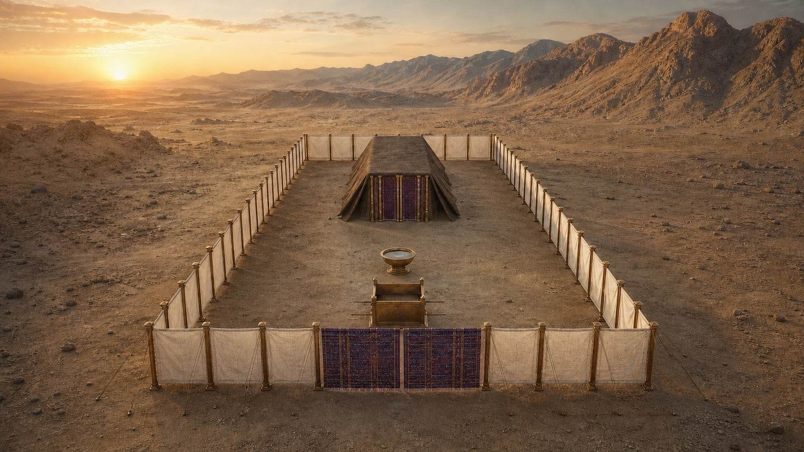
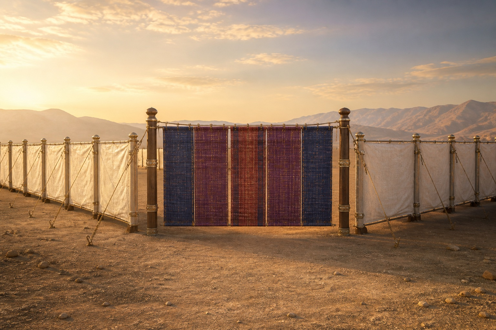
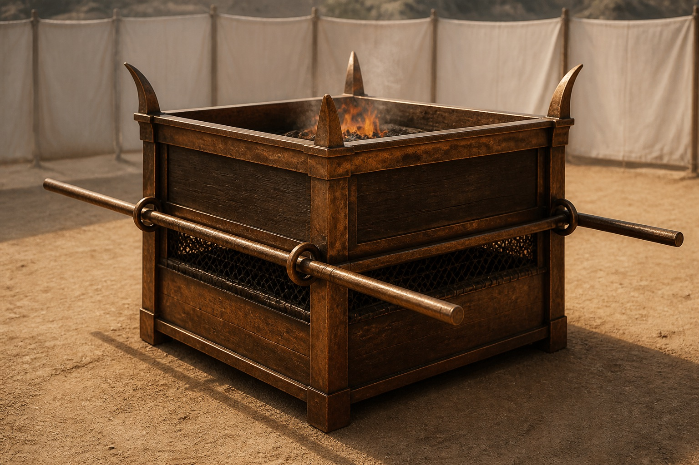
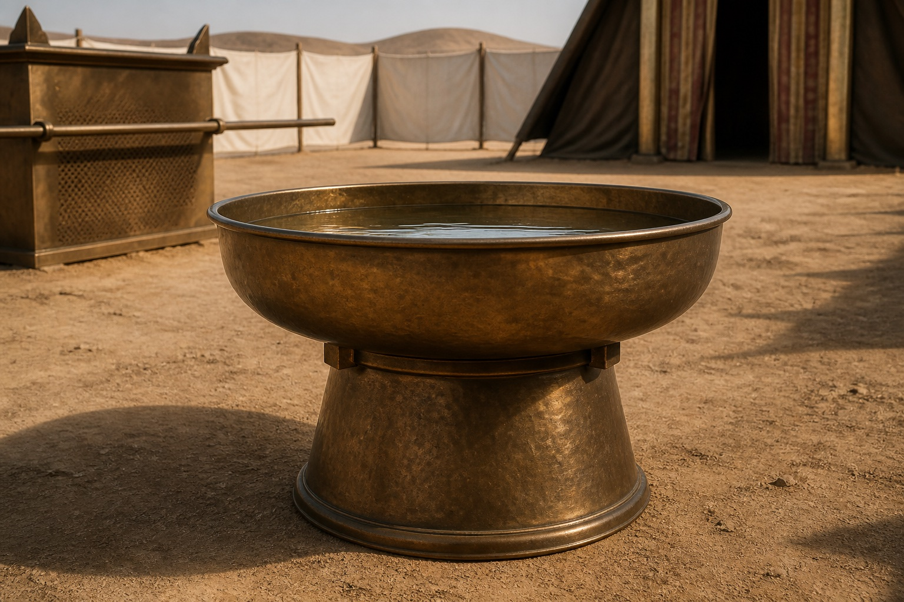
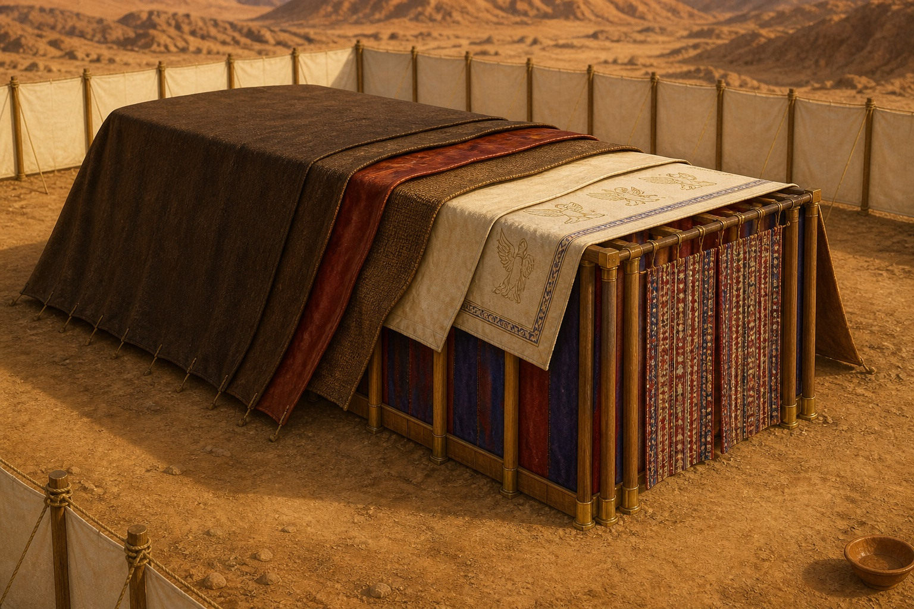
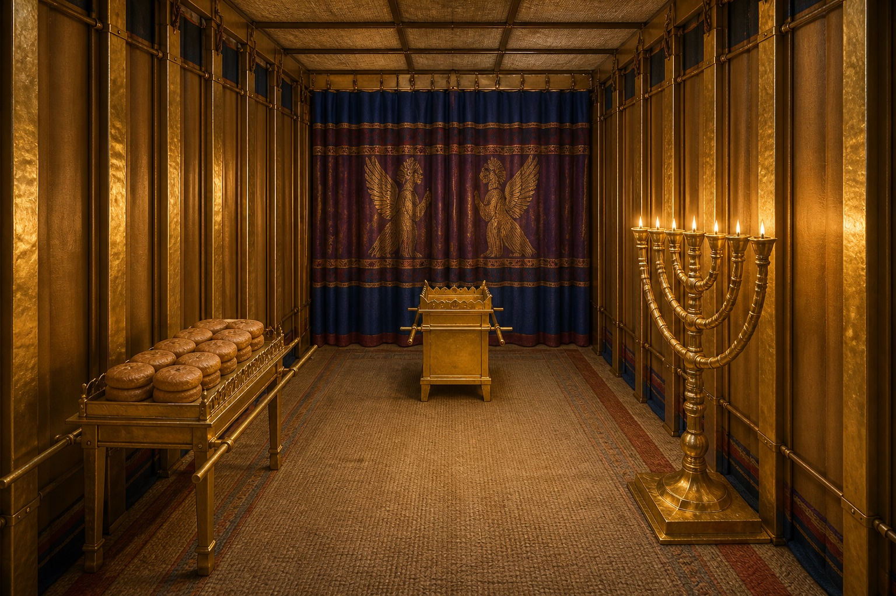
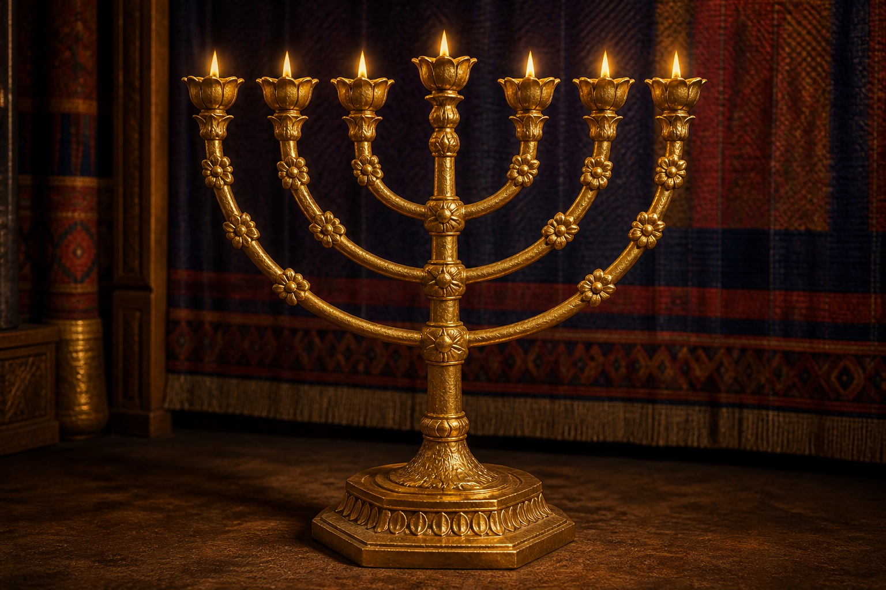
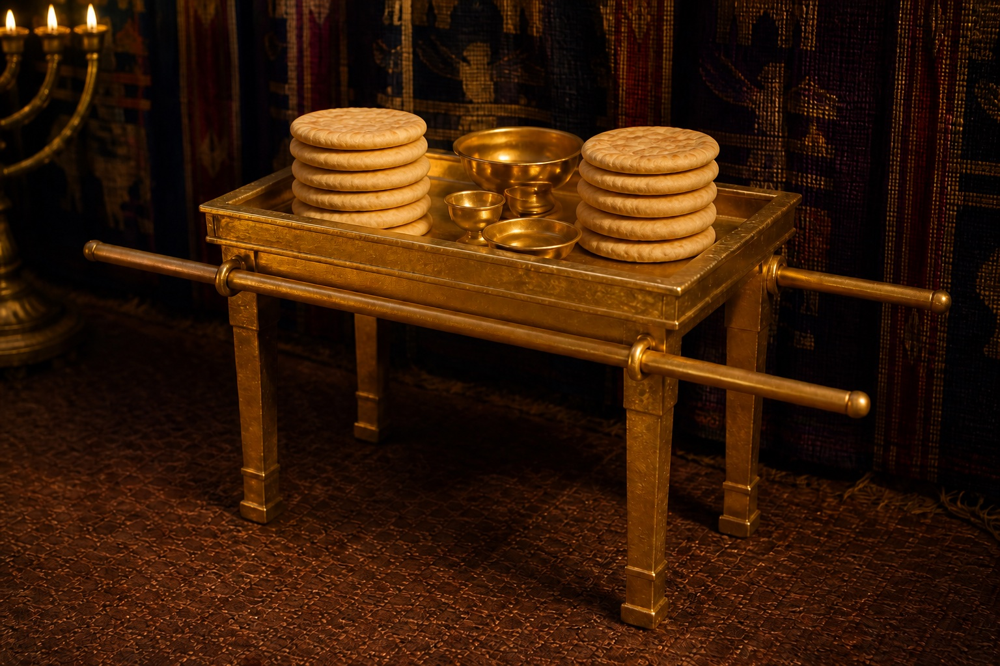
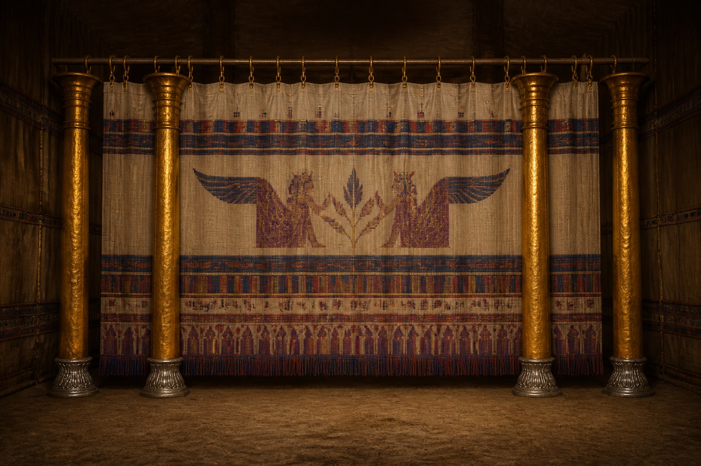
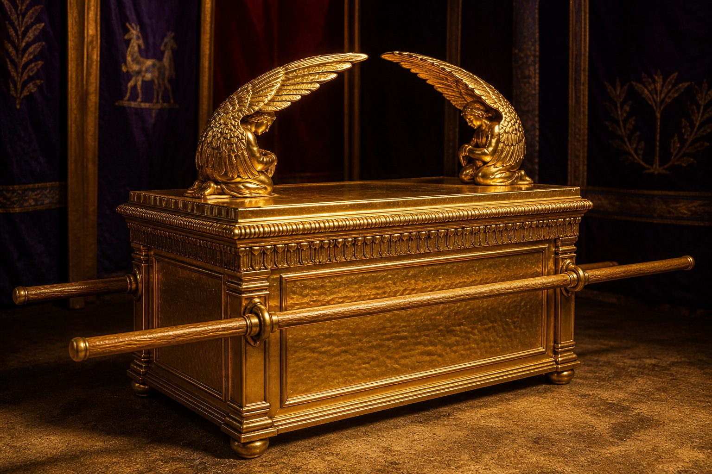

Figura y sombra
El santuario terrenal fue levantado según un modelo mostrado a Moisés. Hebreos lo presenta como copia y sombra que orienta hacia el santuario verdadero y el ministerio superior de Cristo.
Éxodo 25:9, 40 · Hebreos 8:1–5; 9:23–24

Un recorrido por la morada portátil de Israel a partir de Éxodo, distinguiendo la descripción bíblica de las decisiones propias de toda reconstrucción visual.
El Señor pidió a Israel un santuario para habitar en medio de su pueblo y mostró a Moisés un modelo para su construcción. Éxodo 25–31 presenta las instrucciones; Éxodo 35–40 narra su ejecución y culmina con la gloria de Dios llenando la tienda.
El atrio rectangular medía 100 por 50 codos. Dentro se levantaba una tienda de 30 por 10 codos, dividida en lugar santo y lugar santísimo. Su diseño portátil acompañó las jornadas de Israel bajo la nube y el fuego.
El tabernáculo organizaba el acercamiento a Dios mediante sacrificio, purificación, sacerdocio y presencia. Hebreos lo describe como figura y sombra de realidades celestiales cumplidas en el ministerio de Cristo.
Nota de reconstrucción: Éxodo especifica medidas, materiales y funciones, pero no resuelve toda textura, forma o técnica. Las imágenes y el modelo 3D son ayudas educativas; no pretenden ser reproducciones arqueológicas definitivas.
Ver modelo 3D
Diez elementos principales, descritos primero a partir del texto bíblico y después mediante conexiones canónicas presentadas con prudencia.

Éxodo 27:9–19; 38:9–20
El recinto medía 100 codos de largo por 50 de ancho y estaba cercado con cortinas de lino de 5 codos de alto. Al oriente, una cortina de 20 codos tejida en azul, púrpura, carmesí y lino fino formaba la única entrada, sostenida por cuatro columnas.
La entrada única ayuda a contemplar la afirmación de Jesús: «Yo soy la puerta» y «nadie viene al Padre sino por mí». La relación es cristológica y temática; Éxodo no asigna un significado independiente a cada color o columna.

Éxodo 27:1–8 · Levítico 1 · Hebreos 10:1–14
Era una estructura cuadrada de madera de acacia revestida de bronce, de 5 × 5 × 3 codos. Tenía cuernos en sus cuatro esquinas, un enrejado de bronce, argollas y varas para transportarlo. Allí se presentaban los sacrificios prescritos.
Los sacrificios mostraban la gravedad del pecado y la necesidad de expiación. Hebreos contrasta esas ofrendas repetidas con la entrega única y suficiente de Cristo, que perfecciona para siempre a los santificados.

Éxodo 30:17–21; 38:8
La fuente y su base eran de bronce y estaban situadas entre el altar y la entrada de la tienda. Aarón y sus hijos debían lavar allí sus manos y pies antes de ministrar. Éxodo no ofrece dimensiones ni una forma decorativa precisa.
Su función expresa la necesidad de limpieza para el servicio. El Nuevo Testamento habla del lavamiento de la regeneración y de la purificación por la Palabra; esas conexiones son temáticas y no convierten la fuente en una descripción directa del bautismo.

Éxodo 26:1–30; 36:8–34
La tienda combinaba cortinas interiores de lino con querubines, una cubierta de pelo de cabra, pieles de carnero teñidas de rojo y una cubierta exterior cuyo material exacto es discutido. Cuarenta y ocho tablas de acacia revestidas de oro descansaban sobre basas de plata.
El tema central es la presencia de Dios en medio de su pueblo. Juan 1:14 afirma que el Verbo «habitó» entre nosotros usando el lenguaje de poner una tienda. No es necesario convertir cada cubierta o material en un símbolo independiente de Cristo.

Éxodo 26:33–35 · Hebreos 9:2, 6
La primera cámara de la tienda ocupaba 20 × 10 codos. Allí se situaban el candelero al sur, la mesa al norte y el altar del incienso delante del velo. Los sacerdotes entraban regularmente para cumplir su servicio.
Hebreos usa la disposición del santuario para explicar que el acceso pleno todavía no se había manifestado bajo el primer pacto. La luz, el pan y el incienso preparan temas que el Nuevo Testamento desarrolla en Cristo y en la adoración de su pueblo.

Éxodo 25:31–40 · Levítico 24:1–4
Fue labrado a martillo de un talento de oro puro. Una caña central y seis brazos sostenían siete lámparas, con copas semejantes a flores de almendro, cálices y flores integrados en una sola pieza.
Jesús se presenta como la luz del mundo y Apocalipsis emplea candelabros para representar iglesias. Estas conexiones sostienen una lectura sobre testimonio y presencia, pero no asignan un significado oculto a cada copa, cáliz o brazo.

Éxodo 25:23–30 · Levítico 24:5–9
La mesa medía 2 × 1 × 1,5 codos y era de acacia revestida de oro. Tenía moldura, reborde, argollas y varas, además de utensilios de oro. Cada sábado se colocaban doce panes en dos grupos de seis delante del Señor.
El pan expresa provisión, pacto y comunión delante de Dios. Jesús se presenta como el pan de vida que da vida al mundo. El número de panes corresponde a Israel; identificarlo directamente con los apóstoles sería una aplicación posterior.
Éxodo 30:1–10 · Salmo 141:2 · Apocalipsis 5:8; 8:3–4
Este altar de acacia revestida de oro medía 1 × 1 × 2 codos. Tenía cuernos, moldura, argollas y varas. Aarón quemaba incienso aromático cada mañana y cada tarde y, una vez al año, hacía expiación sobre sus cuernos.
Los Salmos y Apocalipsis relacionan el incienso con las oraciones del pueblo de Dios. Hebreos presenta a Cristo intercediendo siempre por quienes se acercan a Dios por medio de él; oración e intercesión convergen sin confundirse.

Éxodo 26:31–33 · Mateo 27:50–51 · Hebreos 10:19–22
La cortina de azul, púrpura, carmesí y lino fino llevaba querubines bordados. Colgaba de ganchos de oro sobre cuatro columnas de acacia revestidas de oro, asentadas en basas de plata, y separaba los dos espacios de la tienda.
El velo hacía visible la separación del lugar santísimo. Su rasgadura al morir Jesús y la enseñanza de Hebreos anuncian un camino nuevo y vivo a la presencia de Dios por medio de la obra de Cristo.

Éxodo 25:10–22; 26:33–34 · Levítico 16 · Hebreos 9:3–5
El arca era un cofre de acacia revestido de oro, de 2,5 × 1,5 × 1,5 codos, con argollas y varas. El propiciatorio de oro puro llevaba dos querubines que extendían sus alas sobre la cubierta. Allí Dios prometió encontrarse con Moisés.
El sumo sacerdote entraba una vez al año con sangre para hacer expiación. Hebreos dirige esa escena al ministerio definitivo de Cristo, y Romanos 3:25 emplea lenguaje de expiación relacionado con el lugar de misericordia.
Hebreos interpreta el santuario y su servicio como figura y sombra de realidades cumplidas en Cristo. Esa guía permite una lectura cristológica sólida sin convertir cada material, medida o color en un código oculto.
El santuario terrenal fue levantado según un modelo mostrado a Moisés. Hebreos lo presenta como copia y sombra que orienta hacia el santuario verdadero y el ministerio superior de Cristo.
Éxodo 25:9, 40 · Hebreos 8:1–5; 9:23–24
El propósito del tabernáculo era la presencia de Dios en medio de Israel. Juan anuncia que el Verbo se hizo carne y puso su morada entre nosotros.
Éxodo 25:8 · Juan 1:14
Los sacrificios repetidos no podían perfeccionar definitivamente la conciencia. Cristo entró una vez para siempre y obtuvo redención eterna mediante su propia sangre.
Hebreos 9:11–14 · 10:10–14
Jesús es el gran sumo sacerdote que atravesó los cielos. Por su sangre, los creyentes reciben libertad para acercarse al trono de la gracia y entrar por el camino nuevo y vivo.
Hebreos 4:14–16 · 10:19–22
El mobiliario del lugar santo reúne temas que el Nuevo Testamento desarrolla: Cristo como luz y pan de vida, y el incienso como imagen de las oraciones del pueblo de Dios.
Juan 6:35; 8:12 · Apocalipsis 5:8
La historia culmina cuando la morada de Dios está con la humanidad redimida. Ya no hay santuario separado: el Señor y el Cordero son su templo.
Apocalipsis 21:3, 22–23
Criterio de interpretación: se priorizan las relaciones que la propia Escritura establece, especialmente en Hebreos 8–10. Otras aplicaciones pueden servir para la enseñanza, pero deben reconocerse como analogías devocionales y no como significados secretos obligatorios.
Explorar en 3D